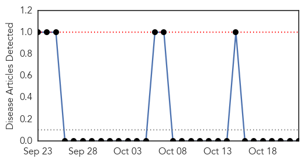
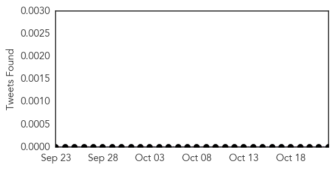
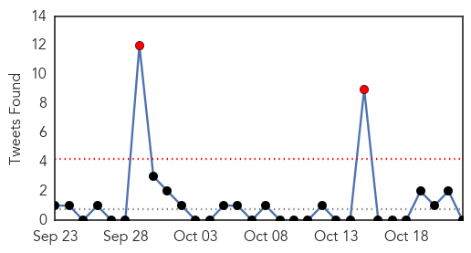

Hemmorhagic Fever
30-Day Web Trend
0 alerts, 0 warnings

30-Day Twitter Trend
1 alerts, 0 warnings

Article Locations

Article Confidences

Top Articles:
-
No articles found for Oct 22, 2015
Top Tweets:
-
No tweets found for Oct 22, 2015
Unknown
30-Day Web Trend
0 alerts, 0 warnings

30-Day Twitter Trend
1 alerts, 0 warnings

Article Locations

Article Confidences

Top Articles:
Top Tweets:
- 0.741
- RT: Lo único que puede salvar a un día gris de convertirse en una noche negra es un príncipe azul que te haga ver todos los colore…
- 0.701
- RT: Hoy en día no se trata de tener una buena voz para ser un cantante exitoso, solo vístete raro e inventa una palabra pega…
- 0.655
- World Health Organization may approve first malaria vaccine https://t.co/8va583KHk1 via
- 0.648
- Ay, control propio, cuánta falta haces en el mundo.
- 0.619
- SerClaseMedia ? eso NO existe en el mundo entero,aquí todo se lo creen...
- 0.560
- RT: Nada mas el papeleo para irse legal toma mas de un año y eso no te asegura nada. Así que bajen de esa nube misijos.